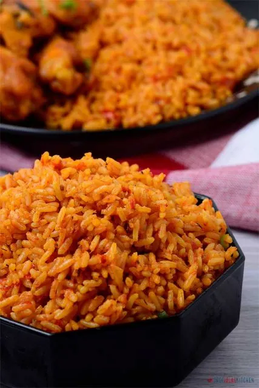

Jollof Rice Recipe

Description
Jollof Rice is one of the most common West African dishes eaten in various
countries in region. It is a versatile dish made from rice and other
delicious ingredients
It is inexpensive and easy to make yet, delicious
Ingredients
- Rice
- Tomatoes
- Pimento peppers
- Tomato paste
- Scotch bonnet
- Onions
- Salt
- and spices...
Steps
-
The inevitable foundation for building up the flavor in this meal is to
start by sauteeing the Onions. This should take about 3 to 5 minutes.
The next thing is to stir in the Tomato paste. This adds a deep and rich
tomato flavor; I simply fry this for another 5 minutes or thereabouts.
-
Add the Ginger and Garlic and cook along with the Tomato paste for
another two minutes; Actually, by the time this ready, you will notice
it in the smell. If you keep it cooking any longer you might risk
burning them.
-
Add my blended peppers. Usually, there is no particular time frame for
frying this pepper. I often stop when the sauce becomes really thick and
the oil literally floats on top of the sauce. At this point, most of the
water is gone and the sauce no longer smells raw. Trust me you will know
but just in case, you are still in doubt, I would say maybe 20 to 25
minutes depending on the quantity of water in your blended pepper.
-
Finally, in building my flavor, I add the Thyme, Curry powder, Salt,
white pepper (good but optional) and seasoning cubes. Adjust the
seasoning at this point if there is a need to. Once the flavor is on
point, then, I stir in my Rice. Make sure you stir the Rice properly
until you cover each grain of Rice with the sauce. Now add the chicken
stock. Give it a brief stir and cover it up with a tight-fitting lid. If
your lid is not fitting enough, simply cover the rice with a foil paper
before covering it with the lid. This is because Jollof needs a lot of
steam in order to turn out well.
-
Once, the rice comes to a boil, reduce the heat to medium-low
immediately and continue to cook until the rice is done about 20 to 25
minutes.
-
Serve with Fried Chicken, Spicy Grilled Chicken, Grilled Tilapia Fish or
Gizzards and plantains.